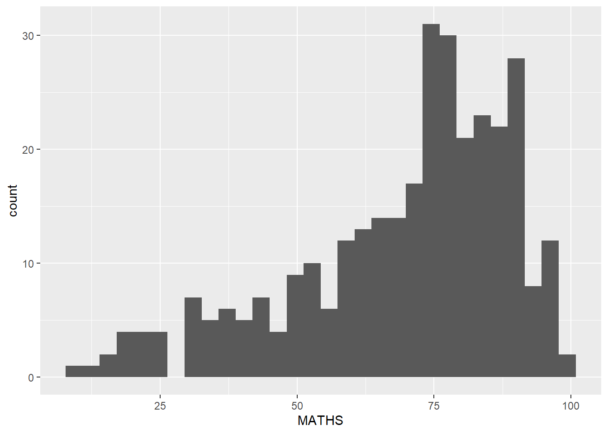
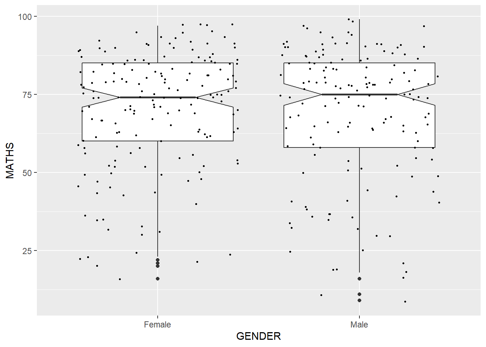

install.packages('pacman')Hands-on Exercise 01: ggplot2 Methods
1. Overview
In this first lesson, we learn to plot statistical graphics using ggplot2, which is a system created based on the principles of “Layered Grammar of Graphics”. The Layered Grammar of Graphics provide a framework to build a visualisation in a structured and defined manner1. ggplot2 is one of the packages in the tidyverse set of packages.
2. Getting Started
2.1. Loading Required Library
First, we will load the tidyverse package into the R environment. We will do so using the pacman package, which can be installed using the following code:
Without loading pacman into the R environment, we can call its p_load function using pacman:: as shown in the code below:
pacman::p_load(tidyverse)2.2. Import Data
Next, we will read the data provided by the Course Instructor into the R environment. We will use the read_csv() function from the readr package found in tidyverse.
Note: use read_csv() from the readr package instead of read.csv() from the R base package. read_csv() is typically faster, produces tibble tables and are more reproducible.
exam_data <- read_csv("data/Exam_data.csv")
glimpse(exam_data)Rows: 322
Columns: 7
$ ID <chr> "Student321", "Student305", "Student289", "Student227", "Stude…
$ CLASS <chr> "3I", "3I", "3H", "3F", "3I", "3I", "3I", "3I", "3I", "3H", "3…
$ GENDER <chr> "Male", "Female", "Male", "Male", "Male", "Female", "Male", "M…
$ RACE <chr> "Malay", "Malay", "Chinese", "Chinese", "Malay", "Malay", "Chi…
$ ENGLISH <dbl> 21, 24, 26, 27, 27, 31, 31, 31, 33, 34, 34, 36, 36, 36, 37, 38…
$ MATHS <dbl> 9, 22, 16, 77, 11, 16, 21, 18, 19, 49, 39, 35, 23, 36, 49, 30,…
$ SCIENCE <dbl> 15, 16, 16, 31, 25, 16, 25, 27, 15, 37, 42, 22, 32, 36, 35, 45…Using glimpse to view the data, it is observed that the data contains the examination grades of a batch of primary 3 students for the subjects English, Maths, and Science.
3. Introducing ggplot2
ggplot2 is an R package for declaratively creating data-driven graphics based on The Grammar of Graphics. It is a package found in tidyverse specially designed for visual exploration and communication.
3.1. R Graphics vs ggplot2
First, we will do a comparison between the core graphical function of Base R, R Graphics, and ggplot2.
hist(exam_data$MATHS)
ggplot(data = exam_data, aes(x = MATHS)) +
geom_histogram(bins = 10,
boundary = 100,
color = "black",
fill = 'grey') +
ggtitle("Distribution of Maths Scores in Primary 3 Cohort")It is relatively simple to create a statistical graph using R Graphics, but ggplot2 offers more versatility and flexibility in the way data is presented visually.
4. Grammar of Graphics
Grammar of Graphics provide a structured framework for data visualisation, where graphs are broken up into semantic components such as scales and layers. There are two principles in the Grammar of Graphics:
Graphics - distinct layers of grammatical elements
Meaningful plots through aesthetic mapping
Drawing parallels with the grammar we know in languages… if a statistical graphic is a language, then the Grammar of Graphics provide the rules to combine different components to give the graphic clearer and deeper meaning.
4.1. Layered Grammar of Graphics
ggplot2 is an implementation of Leland Wilkinson’s Grammar of Graphics with seven layers:
Data: the data set used for plotting
Aesthetics: use attributes of the data to influence visual characteristics
Geometrics: visual elements used for the data such as point, bar or line
Facets: create multiple variations of the same graph by splitting data into subsets such as paneling and multiple plots
Statistics: statistical transformation to summarise the data such as mean and confidence intervals
Coordinate systems: define the plane on which data is mapped on the graphic
Themes: non-data elements of the plot such as main title, axis title, legend background
We will explore each layer in the subsequent sub-sections.
5. Data
We can call the ggplot() function using the exam_data data set:
ggplot(data = exam_data)
This code initialises a ggplot object and it generates a blank canvas without the inclusion of other layers.
6. Aesthetics
The aesthetics mappings take attributes of the data to influence visual characteristics such as position, colour, size, shape or transparency. Each visual characteristic can encode an aspect of the data and be used to convey information. All aesthetics of a plot can specified in the aes() function call.
We will add on to the previous code chunk:
ggplot(data = exam_data,
aes(x = MATHS))
We can see that the x-axis and x-axis label are added to the plot.
7. Geometrics
Geometric objects are the actual marks put on the plot. We will explore some examples below.
ggplot(data = exam_data,
aes(x = RACE)) +
geom_bar()
ggplot(data = exam_data,
aes(x = MATHS)) +
geom_dotplot(dotsize = 0.5)
In a dot plot, the width of a dot corresponds to the bin width (or maximum width, depending on the binning algorithm), and dots are stacked, with each dot representing one obeservation.
Hence, we can observe that the y-axis in the plot above is misleading as it is labelled as count and ranges from 0 to 1. We can remove the y-axis by using scale_y_continuous:
ggplot(data = exam_data,
aes(x = MATHS)) +
geom_dotplot(dotsize = 0.5) +
scale_y_continuous(NULL, breaks = NULL)ggplot(data = exam_data,
aes(x = MATHS)) +
geom_histogram()
Note: Default bin is 30.
geom_density computes and plots the kernel density estimate, which is a smoothed line of the histogram. It is a useful alternative to the histogram for continuous data the comes from an underlying smooth distribution.
ggplot(data = exam_data,
aes(x = MATHS)) +
geom_density()
We can use the color or fill arguments from aes() to plot two kernel density lines for comparison:
ggplot(data = exam_data,
aes(x = MATHS,
color = GENDER)) +
geom_density()
The boxplot visualises five summary statistics - median, lower and upper quartile, and minimum and maximum - and the outlier points.
ggplot(data = exam_data,
aes(y = MATHS,
x = GENDER)) +
geom_boxplot()
We can add notches to the box plot as a visual aid to check if the medians of distributions differ. It can be observed that medians are different if the notches do not overlap. We add in notches using the following code:
ggplot(data = exam_data,
aes(y = MATHS,
x = GENDER)) +
geom_boxplot(notch = TRUE)
geom_violin() is used to create a violin plot, whcih is a way of comparing multiple data distributions. It is easier to compare several distributions using a violin plot as the plots are placed side by side. We use the following code to plot a violin plot:
ggplot(data = exam_data,
aes(y = MATHS,
x = GENDER)) +
geom_violin()
geom_point() is especially useful for creating scatterplot to visualise any relationships between two continuous variables.
ggplot(data = exam_data,
aes(y = MATHS,
x = ENGLISH)) +
geom_point()
We can plot more than one geom object into one plot. For example, we can plot a geom_boxplot() with geom_point():
ggplot(data = exam_data,
aes(y = MATHS,
x = GENDER)) +
geom_boxplot(notch = TRUE) +
geom_point(position = "jitter",
size = 0.5)
7.9. Modifying a geometric object using geom()
We can customize a plot by adjusting the arguments within geom(), such as:
ggplot(data = exam_data,
aes(x = MATHS)) +
geom_histogram(bins = 20,
color = "black",
fill = "light blue")
7.10. Modifying a geometric object using aes()
We can add more details into the plot by adjusting the fill colour of the histogram by adjusting the arguments in aes():
ggplot(data = exam_data,
aes(x = MATHS,
fill = GENDER)) +
geom_histogram(bins = 20,
color = "grey30")
Note: This approach can be used to adjust the colour, fill, and alpha of the geometric object.
8. Statistics
8.1. Using stat_summary()
We can use the stat_summary() function to add mean values into a plot. We use the boxplot as an example:
ggplot(data = exam_data,
aes(y = MATHS,
x = GENDER)) +
geom_boxplot() +
stat_summary(geom = "point",
fun.y = "mean",
color = "red",
size = 4)
8.2. Using the geom() Method
Mean values can also be added through the geom() function:
ggplot(data = exam_data,
aes(y = MATHS,
x = GENDER)) +
geom_boxplot() +
geom_point(stat = "summary",
fun.y = "mean",
color = "red",
size = 4)
8.3. Add Best Fit Curve to Scatterplot
We can use geom_smooth() to plot a best fit curve on the scatterplot:
ggplot(data = exam_data,
aes(y = MATHS,
x = ENGLISH)) +
geom_point() +
geom_smooth(size = 0.5)The default method used is loess, and this can be changed by specifying the preferred method:
ggplot(data = exam_data,
aes(y = MATHS,
x = ENGLISH)) +
geom_point() +
geom_smooth(method = lm,
size = 0.5)9. Facets
Facets are used to create small multiples in one plot, with each small multiples displaying a different subset of the data. Two types of facets are supported by ggplot2: facet_wrap() and facet_grid().
9.1 facet_wrap()
facet_wrap() wraps a 1d sequence of panels into 2d, which is a better use of screen space than facet_grid():
ggplot(data = exam_data,
aes(x = MATHS)) +
geom_histogram(bins = 20) +
facet_wrap(~ CLASS)
9.2. facet_grid()
facet_grid() forms a matrix of panels defined by row and column facetting variables. It is most useful when used with two discrete variables, and all combinations of the variables exist in the data.
ggplot(data = exam_data,
aes(x = MATHS)) +
geom_histogram() +
facet_grid(~ CLASS)10. Coordinates
The Coordinates functions map the position of objects onto the plane of the plot. Some possible coordinate systems to use include:
coord_flip()coord_cartesian()coord_fix()coord_quickmap()
10.1. coord_flip()
ggplot(data = exam_data,
aes(x = RACE)) +
geom_bar()
coord_flip() flips the vertical bar charts into horizontal bar charts:
ggplot(data = exam_data,
aes(x = RACE)) +
geom_bar() +
coord_flip()
10.2. Changing the range of the y- and x-axes
ggplot(data = exam_data,
aes(x = MATHS,
y = ENGLISH)) +
geom_point() +
geom_smooth(method = lm,
size = 0.5)
We can observe that the y- and x-axes in the plot is not equal and could appear as misleading.
We can use coord_cartesian() to set the limits of both the x- and y-axes from 0 to 100.
ggplot(data = exam_data,
aes(x = MATHS,
y = ENGLISH)) +
geom_point() +
geom_smooth(method = lm,
size = 0.5) +
coord_cartesian(xlim = c(0,100),
ylim = c(0,100))
11. Themes
Themes control elements of the graph that are not related to the data, such as background colour, size of fonts, gridlines, and colour of labels.
ggplot(data = exam_data,
aes(x = RACE)) +
geom_bar() +
coord_flip() +
theme_gray()
ggplot(data = exam_data,
aes(x = RACE)) +
geom_bar() +
coord_flip() +
theme_classic()
ggplot(data = exam_data,
aes(x = RACE)) +
geom_bar() +
coord_flip() +
theme_minimal()Footnotes
https://towardsdatascience.com/a-comprehensive-guide-to-the-grammar-of-graphics-for-effective-visualization-of-multi-dimensional-1f92b4ed4149↩︎